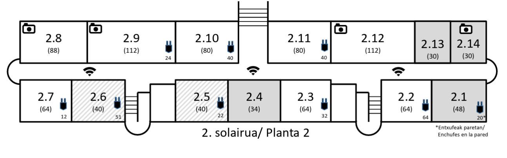

Esleitutako gela / Aula asignada
Hauek dira zure azterketa-gela(k) / Esta es tu aula (o aulas) de examen.
Solairuko planoa / Plano de planta

location_on
Zentroaren izena · Nombre del centro
Solairua / Planta · Herria / Localidad
map
Google Maps-en ireki / Abrir en Google Maps
Garrantzizko informazioa
Información importante (PDF)
Eskuzko bilaketa / Búsqueda manual
QR kodea duzu? Mugikorraren kamera erabili / ¿Tienes el QR? Usa la cámara del móvil para escanearlo.
Laguntza / Ayuda
Nola erabili: Sartu zure irakasgaiaren kodea eta sakatu Bilatu. QR kodea baduzu, mugikorraren kameraz eskaneatu eta zuzenean ikusiko duzu zure gela.
Cómo usarlo: Introduce el código de tu asignatura y pulsa Buscar. Si tienes el QR, escanéalo con la cámara del móvil y verás directamente tu aula.
Datu pertsonalik ez da gordetzen / No se guardan datos personales. Estatistika anonimoak soilik (eskaneo-kopurua) / Solo estadísticas anónimas (número de escaneos).